How Is Visualized
MIDS W209: Information Visualization
John Alexis Guerra Gómez | john.guerra[at]gmail.com | @duto_guerra
https://johnguerra.co/lectures/MIDS_W209_Information_Visualization/04_How/
https://johnguerra.co/lectures/MIDS_W209_Information_Visualization/04_How/

Partially based on slides from Tamara Munzner
What We Are Going to Learn
- Marks
- Channels
- Ordered
- Categorical
- Expressivity
- Effectivity
Marks and Channels
Analyze Idiom Structure
Marks
Point
Line
Area
Channels
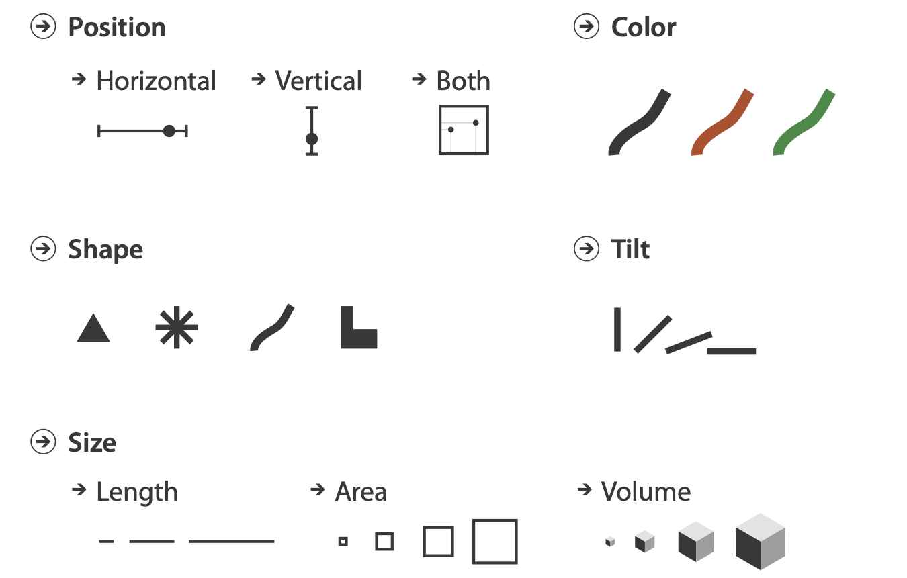Channel Types
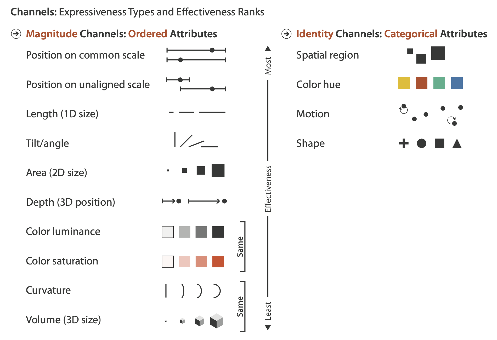What Marks and Channels? Part I

What Marks and Channels? Part I

What Marks and Channels? Part II
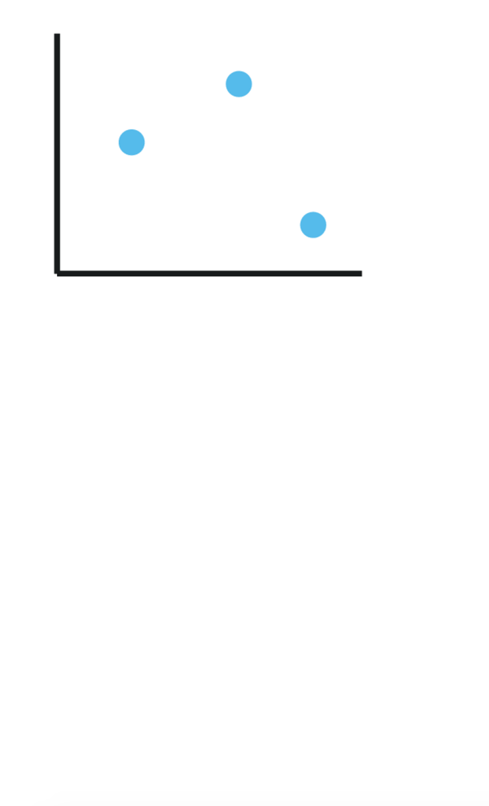What Marks and Channels? Part II

What Marks and Channels? Part III
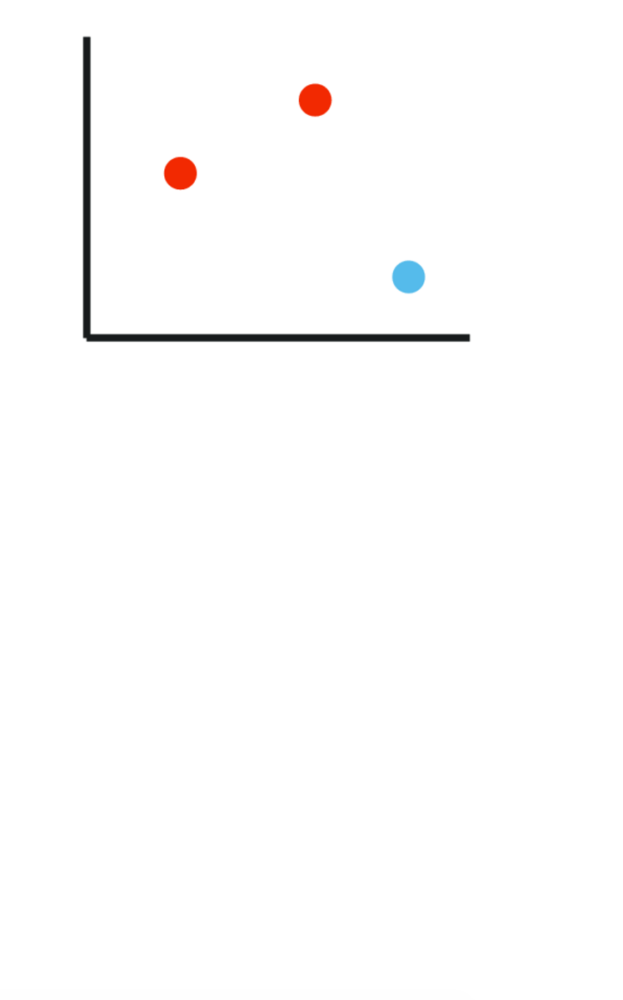What Marks and Channels? Part III
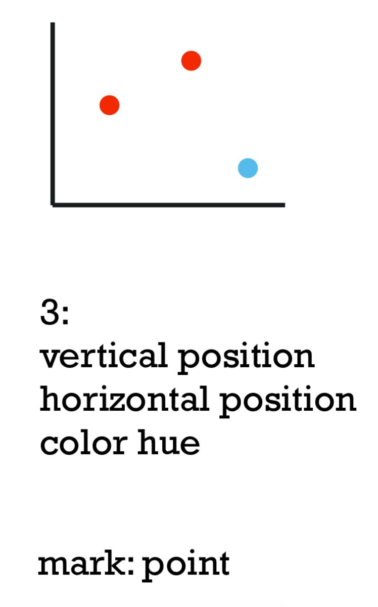What Marks and Channels? Part IV

What Marks and Channels? Part IV
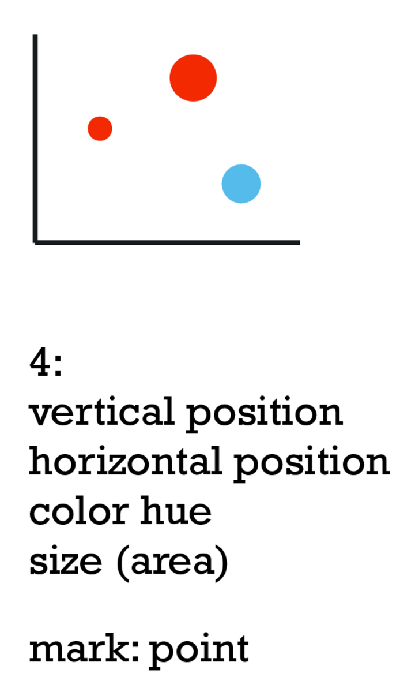Marks and Channels Examples
Points
- Zero-dimensional
- Convey position only
- Can be size- and shape-coded
Lines
- One-dimensional
- Convey position and length
- Can only be width-coded
Areas
- Two-dimensional
- Are fully constrained
Effectiveness and Expressiveness
Expressiveness
- Visual encoding should express all of—and only—the information in the dataset.
- Ordered data should be shown in a way we perceive as ordered.
- Match channel and data characteristics.
Effectiveness
Encode most important attributes with highest-ranked channels
[Automating the Design of Graphical Presentations of Relational Information. Mackinlay. ACM Trans. on Graphics (TOG) 5:2 (1986), 110–141]
Where Does the Ranking Come From?
- Accuracy
- Discriminability
- Separability
- Popout
Accuracy: Fundamental Theory
Accuracy: Visualization Experiments
Effectiveness Tips
Discriminability
How many steps are usable?
Line width: Not many 🤷🏼♂️
Line width: Not many 🤷🏼♂️
Separability
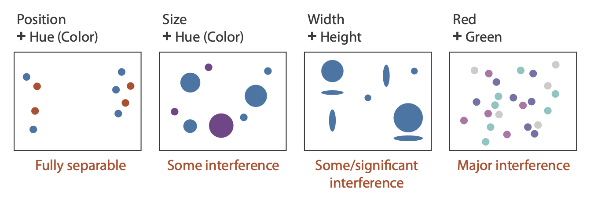Popup
- Find the odd ones.
- Which ones pop up?
Grouping
- Containment
- Connection
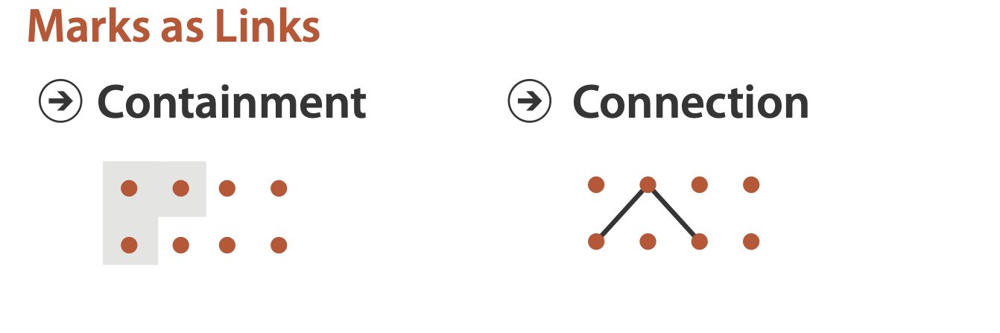
Containment
Similarity
Grouping (cont.)
- Proximity 👉 use spatial separation
- Similarity 👉 use categorical channels
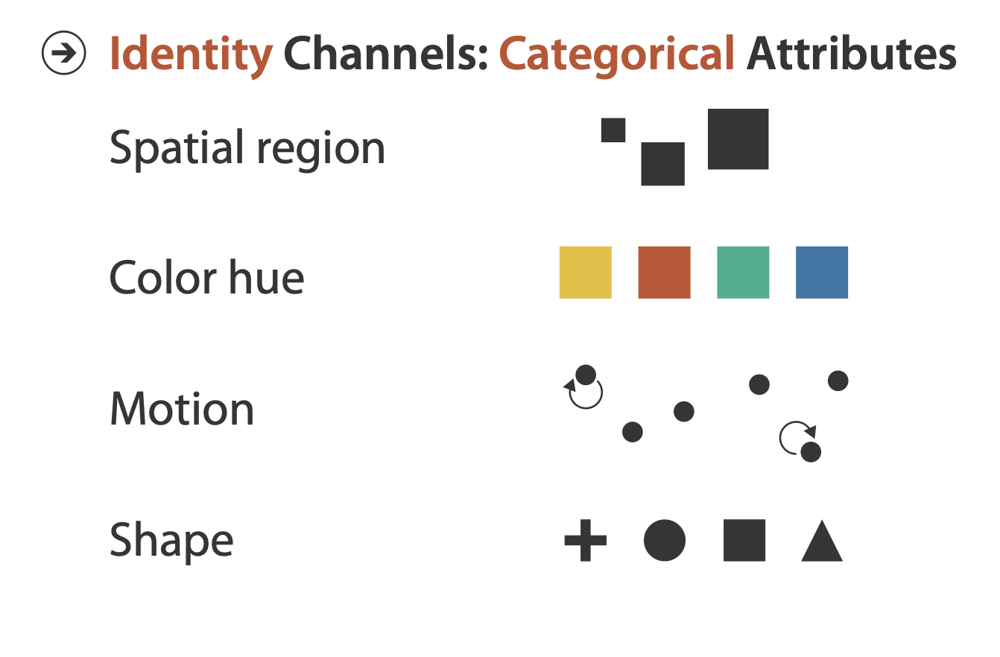
Proximity and Similarity
Relative vs. Absolute Judgments
- Perceptual 👉 mostly relative judgments, not absolute
- That’s why accuracy increases with:
- Common frame
- Scale and alignment
 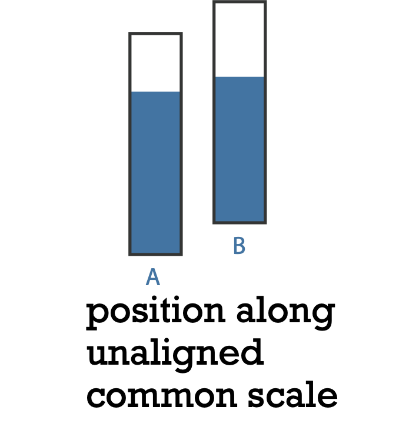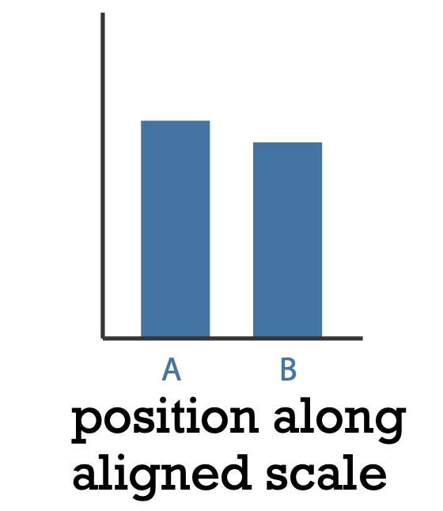
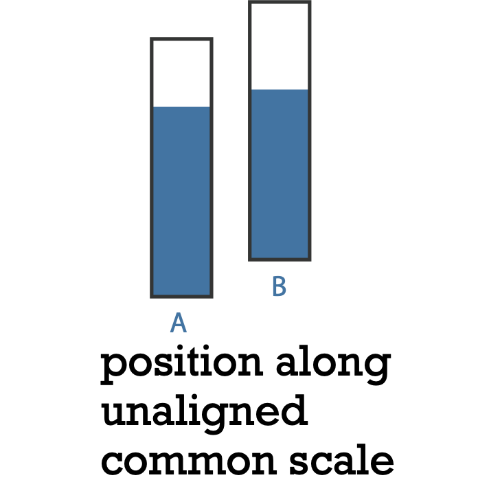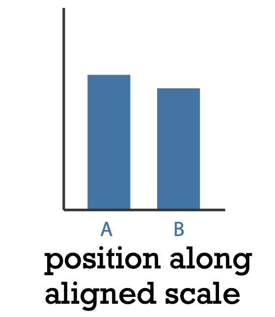after [Graphical Perception: Theory, Experimentation, and Application to the Development of Graphical Methods. Cleveland and McGill. Journ. American Statistical Association 79:387 (1984), 531–554.]
Weber's Law
The ratio of increment to background is constant.
- Lift 2Kg
- Then add 2Kg
- Then add 20K
- Then add 2K — would you feel them?
Popup is hard in a noisy visualization.
Practice: Choose Your Path
Which Tool for the Job?
D3Vega-LiteAltairTableau
When D3
- Interactivity
- Custom-made visualizations
- Performance
- Differentiate
- Force simulations
- Advanced visualizations
When Vega-Lite
- You need something quick...
- ...Yet flexible
- Web-based
- Facets!
- Coordinated views
- Automate your charts
When Altair
- You love Python
- Same as Vega-Lite
- Your model is in Python
- Great syntactic sugar
When Tableau
- Visual exploration
- First pass through the data
- Don't need complex charts
- Don't mind Tableau branding
- Can spend the budget
Choose Your Path
D3Vega-LiteAltairTableau
What We Learned
- Marks
- Channels
- Ordered
- Categorical
- Expressivity
- Effectivity